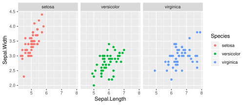
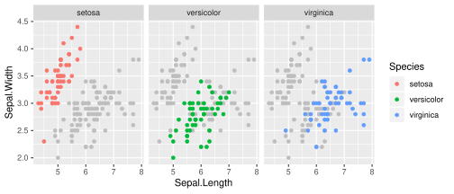
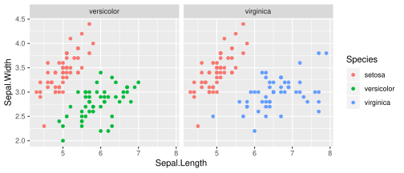

はじめに
facet を使うと以下のようにグループごとにプロットを分けることができます．しかし，グループ間の比較を行うのがちょっと辛いですね．こんな時，どうすればいいのでしょうか．
「ggplot で scale = free な facet の軸を調整する」と同様，基本はレイヤーを足すかデータを弄るかです．
library(ggplot2)
ggplot(iris, aes(x = Sepal.Length, y = Sepal.Width, colour = Species)) +
geom_point() +
facet_wrap(vars(Species))
facet で表示されない部分のデータをグレーでプロットしてみる
ここからは tidyverse パッケージのオンパレードですね．
nested data frame の扱いに慣れていないと辛いです．
library(dplyr)
library(tidyr)
library(purrr)
bg <- iris %>%
mutate(Species = map(Species, ~ setdiff(unique(Species), .x))) %>%
unnest
ggplot(iris, aes(x = Sepal.Length, y = Sepal.Width, colour = Species)) +
geom_point(data = bg, colour = "gray") +
geom_point() +
facet_wrap(vars(Species))
いいですね!
bgは以下のようにして facet と group の組み合わせを調整しています．
| 元のデータフレーム | ||
|---|---|---|
| x | y | group |
| 1 | 1 | a |
| 2 | 2 | b |
| 3 | 3 | c |
↓
| 背景用に用意したデータフレーム | |||
|---|---|---|---|
| x | y | group | group_for_facet |
| 1 | 1 | a | b |
| 1 | 1 | a | c |
| 2 | 2 | b | a |
| 2 | 2 | b | c |
| 3 | 3 | c | a |
| 3 | 3 | c | b |
versicolor と virginica だけで facet してそれぞれの facet に setosa を表示する
iris %>%
mutate(
Species = as.character(Species),
facet = ifelse(
Species == "setosa",
list(setdiff(unique(Species), "setosa")),
as.list(Species)
)
) %>%
unnest %>%
ggplot(aes(Sepal.Length, Sepal.Width, colour = Species)) +
geom_point() +
facet_wrap(vars(facet))
GOOD! このような用途では scales = "fixed" がいいと思います．
データフレームの操作では以下のようにして facet と group の組み合わせを調整しています．
| 元のデータフレーム | ||
|---|---|---|
| x | y | group |
| 1 | 1 | a |
| 2 | 2 | b |
| 3 | 3 | c |
↓
| プロット用に整形したデータフレーム | |||
|---|---|---|---|
| x | y | group | facet |
| 1 | 1 | a | b |
| 2 | 2 | b | b |
| 1 | 1 | a | c |
| 3 | 3 | c | c |